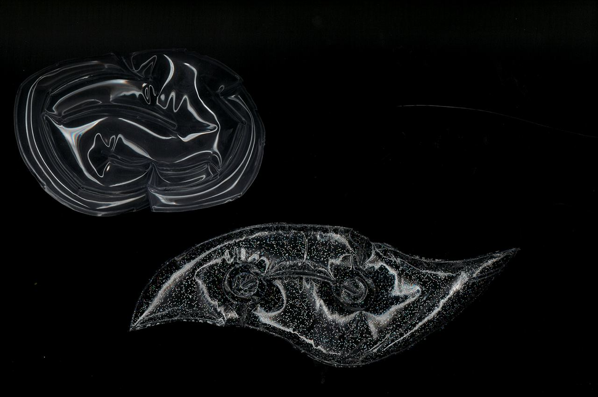
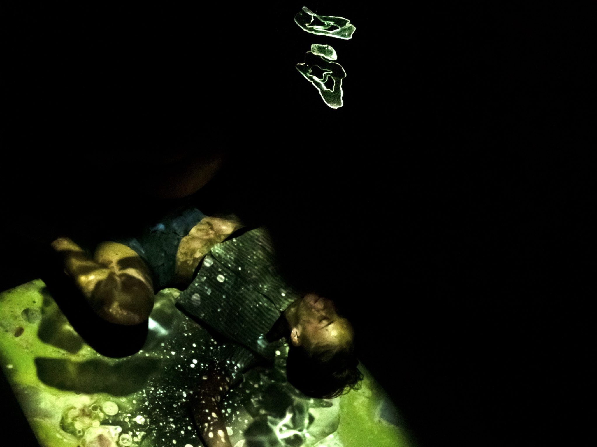
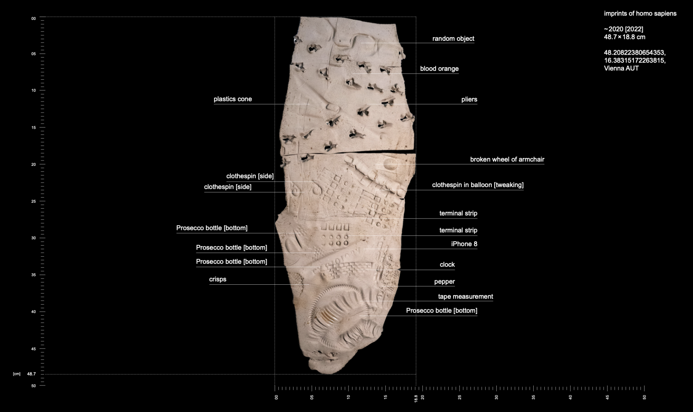
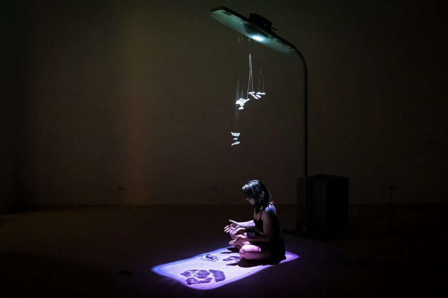
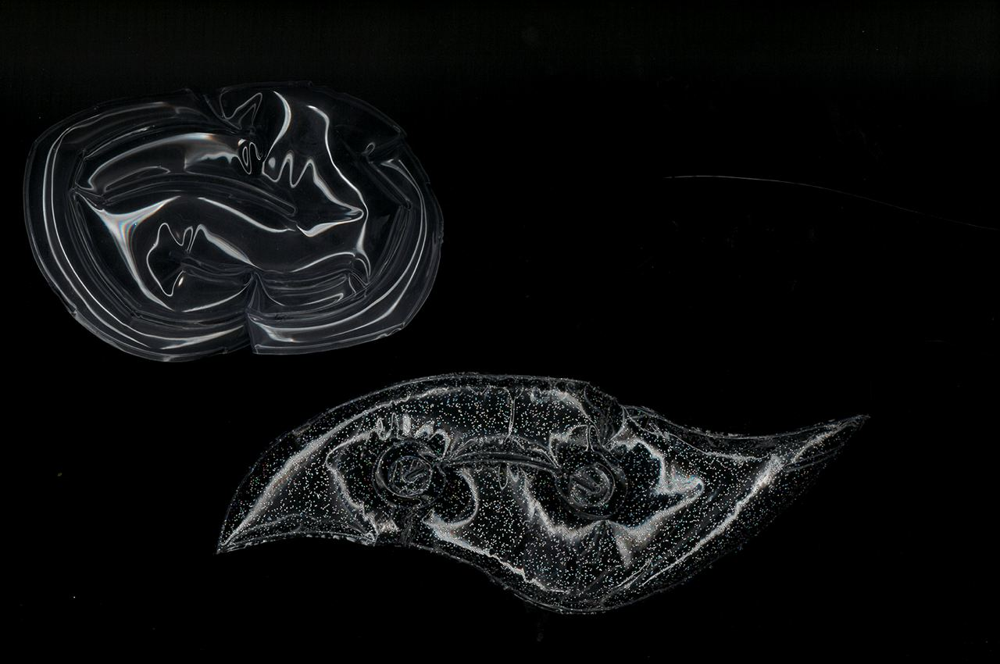
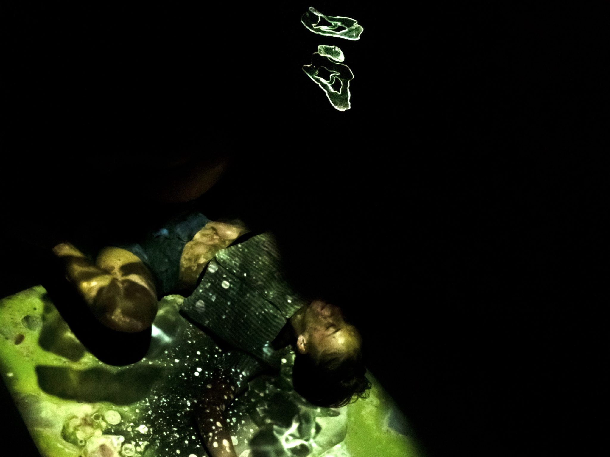
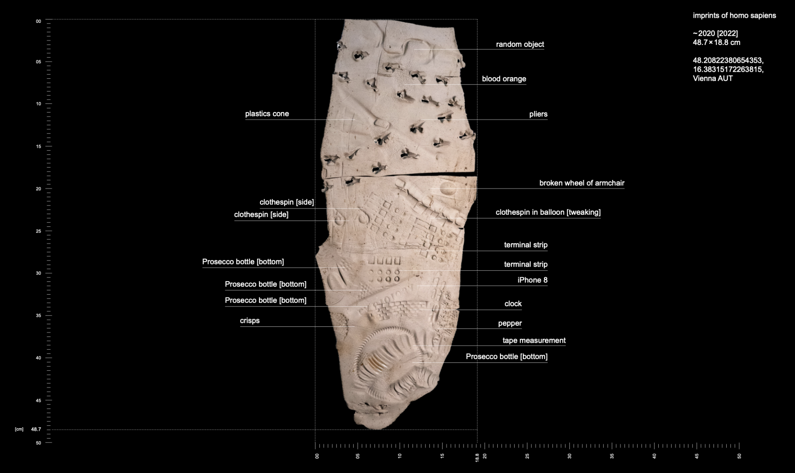
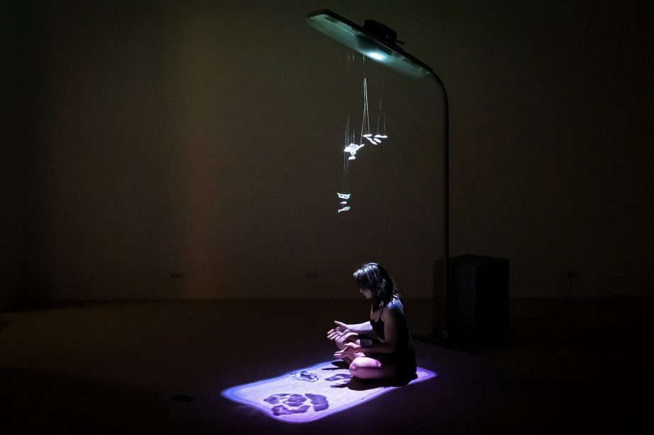

Although humankind represents only 0.0067 % of earth’s lifetime, we see ourselves as the ultimate species. We interpret fossils we find as evidence
that other life forms existed on this planet before us and as source for our assumptions on their look — just like we did with the Gabonionta.
However, we will never be able to fully grasp these beings that are lost to deep time. The fossils are a meager piece of evidence representing only a fraction of the otherwise forgotten. A shadow left behind. We try to illuminate them by investigating and interpreting their remains. But even with a commitment to an unbiased approach, we cannot help but have our anthropocentric perspective reflected back at us. While the Gabonionta give us clues about the past, they are at the same time a glimpse into the future — our future. What will be left of humankind in another 2 billion years, will we even be remembered?
Our installation brings humans and Gabonionta together, enabling interaction and thus reaching beyond the unfathomable space of time. The project creates the basis for a dialogue between the two, giving us the possibility to understand more about them and ultimately about ourselves and our relics. Because in the end, only the shadow will remain.
However, we will never be able to fully grasp these beings that are lost to deep time. The fossils are a meager piece of evidence representing only a fraction of the otherwise forgotten. A shadow left behind. We try to illuminate them by investigating and interpreting their remains. But even with a commitment to an unbiased approach, we cannot help but have our anthropocentric perspective reflected back at us. While the Gabonionta give us clues about the past, they are at the same time a glimpse into the future — our future. What will be left of humankind in another 2 billion years, will we even be remembered?
Our installation brings humans and Gabonionta together, enabling interaction and thus reaching beyond the unfathomable space of time. The project creates the basis for a dialogue between the two, giving us the possibility to understand more about them and ultimately about ourselves and our relics. Because in the end, only the shadow will remain.
 






